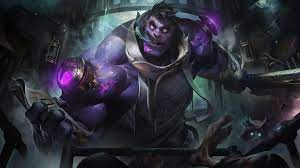
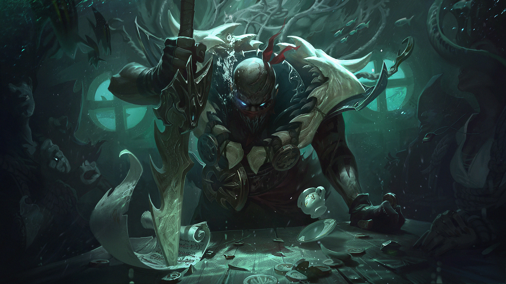

Born to a Targonian Aspect at the height of the Rune Wars, Kayle honored her mother's
legacy by fighting for justice on wings of divine flame. She and her twin sister Morgana were the
protectors of Demacia for many years—until Kayle became disillusioned...
0

Utterly mad, tragically homicidal, and horrifyingly purple, Dr. Mundo is what keeps many of Zaun’s
citizens indoors on particularly dark nights. Now a self-proclaimed physician, he was once a patient of
Zaun’s most infamous asylum. After “curing” the entire staff, Dr. Mundo established his practice in the
empty wards that once treated him and began mimicking the highly unethical procedures he had so often
experienced himself. With a full cabinet of medicines and zero medical knowledge, he now makes himself
more monstrous with each injection and terrifies the hapless “patients” who wander near his office.
0

Arenowned harpooner from the slaughter docks of Bilgewater, Pyke should have met his
death in the belly of a gigantic jaull-fish… and yet, he returned. Now, stalking the dank alleys and
backways of his former hometown, he uses his new supernatural gifts to bring a swift and gruesome end to
those who make their fortune by exploiting others—and a city that prides itself on hunting monsters now
finds a monster hunting them.